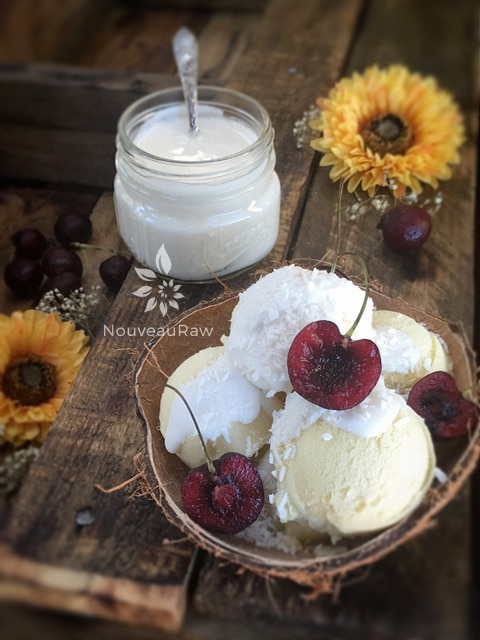
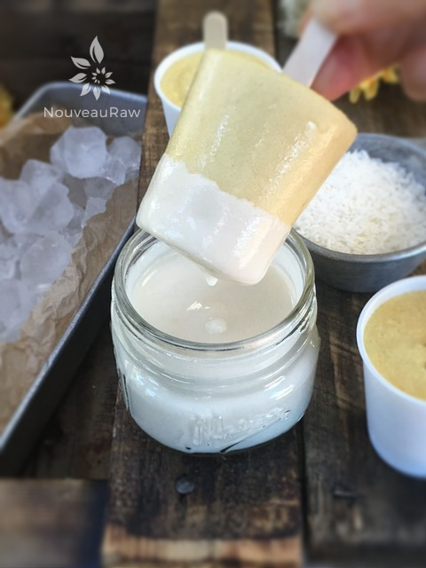
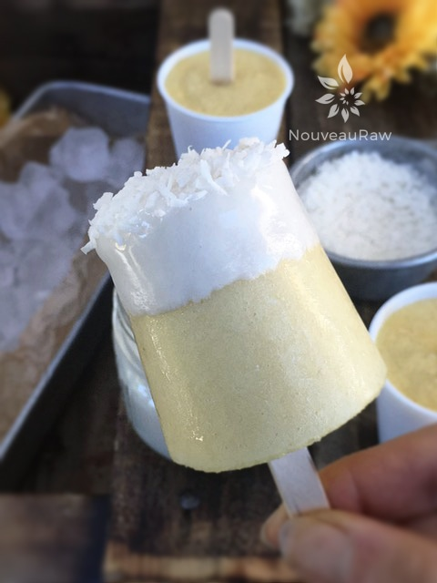
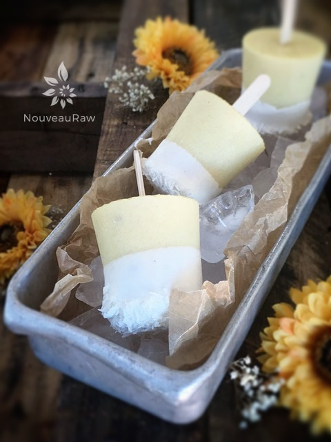

Pineapple Mango Orange Ice Cream

~ raw, vegan, gluten-free ~
Grab the ukulele, strap on that grass skirt, and get ready for a taste of the islands. Or better yet, grab a spoon and dig into this totally tropical ice cream.
Yep, just sit back, and treat each bite as though it were a mini-glacier. Let it slowly melt down your throat, allowing each and every taste bud to get evenly coated with all the wonderful refreshing flavors.
At first, you will be struck with a sweet flavor of the pineapple, but soon your palate will be alerted to other trespassers, such as coconut, mango, and a tinge of citrus. Sounds inviting, doesn’t it?
My main goal was just to make pineapple ice cream, but last-minute decided to add in some leftover mango that was in the fridge and a few lonely oranges that have been rolling around on my counter. It was time to retire them from their counter-soccer-playing days.
When creating the ice cream batter, you can hold back a small porting of each fruit and add last minute. This will give you fruity chunks in the end product. My husband, however, seems to enjoy the fruits blended in, giving the ice cream an entirely smooth texture. It’s all in your preference.
If you are looking for a yummy way to dress this ice cream up, not that it is needed… you can drizzle some Lemon Coconut Cream Icing on top. See the second photo. I also used some of the ice cream batter to create some Dixie pops. See below. I poured the batter into 3 oz Dixie cups, slipped a popsicle stick in the center, and frozen them. I then dipped each one into some icing as well as a sprinkling of shredded coconut. Delicious!
Preparation:
- In a high-speed blender, combine the milk, coconut, sweeteners, vanilla, coconut oil, salt, mango, oranges, and psyllium. Blend until nice and creamy.
- Due to the volume, you will need a large blender carafe, or you could cut the recipe in half.
- Blend until the filling is creamy smooth. You shouldn’t detect any grit. If you do, keep blending.
- Place the blender carafe in the fridge or freezer for 1 hour.
- If chilled in the fridge it can stay there for up to 8 hours. But don’t leave it in the freezer for more than an hour or it will start to freeze solid.
- Once chilled pour the batter into the ice cream maker and follow the manufacturer’s instructions.
- It is best to take the ice cream out of the freezer about 10 minutes ahead of time, so it can have a chance to soften.
- Eat within 1 month.
Freezing Suggestions for Ice Cream:
-
Use an ice cream machine. Follow the manufactures directions.
-
Freeze in popsicle molds or 3 oz Dixie cups with a popsicle stick inserted.
-
-
Store the ice cream in the very back of the freezer, as far away from the door as possible. Every time you open your freezer door you let in warm air. Keeping ice cream way in the back and storing it beneath other frozen-sold items will help protect it from those steamy incursions.
-
Ice cream is full of fat, and even when frozen, fat has a way of soaking up flavors from the air around it—including those in your freezer. To keep your ice cream from taking on the odors, use a container with a tight-fitting lid. For extra security, place a layer of plastic wrap between your ice cream and the lid.
-
To soften in the refrigerator, transfer ice cream from the freezer to the refrigerator 20-30 minutes before using. Or let it stand at room temperature for 10-15 minutes.
-
Wish to make your own raw ice cream, wonder what machine I might recommend, and more? Click (
here) to check out the Reference Library!




© AmieSue.com